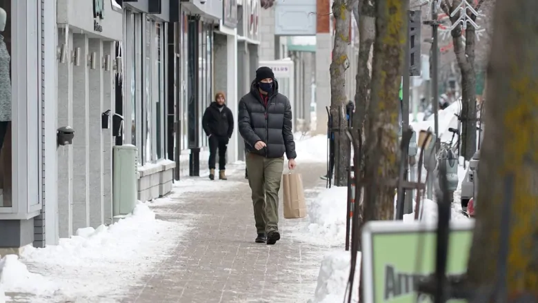

Opposition parties urge Quebec to protect orange zones as coronavirus restrictions lift
QUEBEC CITY -- The Legault government needs to reconsider measures in areas transitioning from red to orange zones, according to opposition parties, who say the current rules leave several regions vulnerable.
Read the full story on CTV news
Quebec's regions rejoice as COVID-19 restrictions loosened

Province pushes curfew to 9:30 p.m. in orange zones, allows restaurants and gyms to reopen in some places
Read the full story on CBC